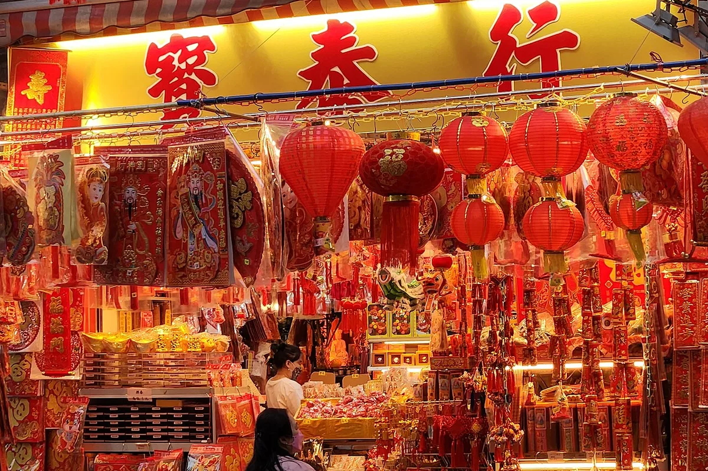
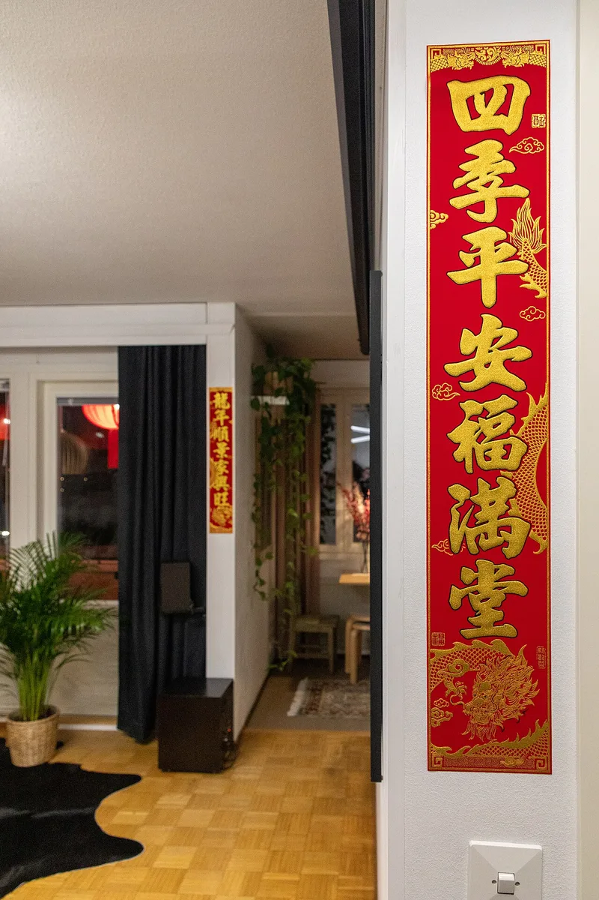
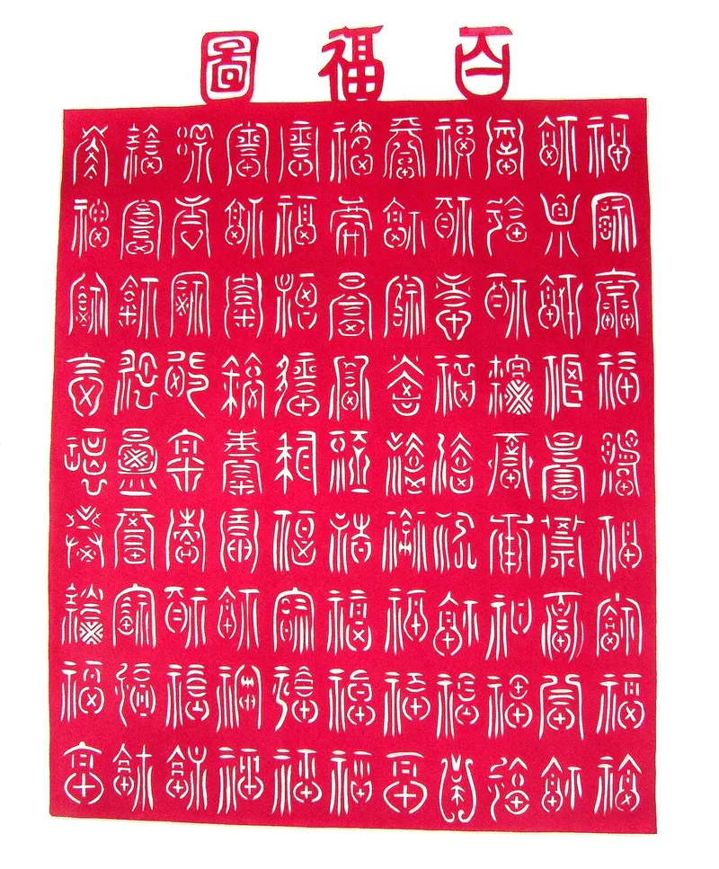
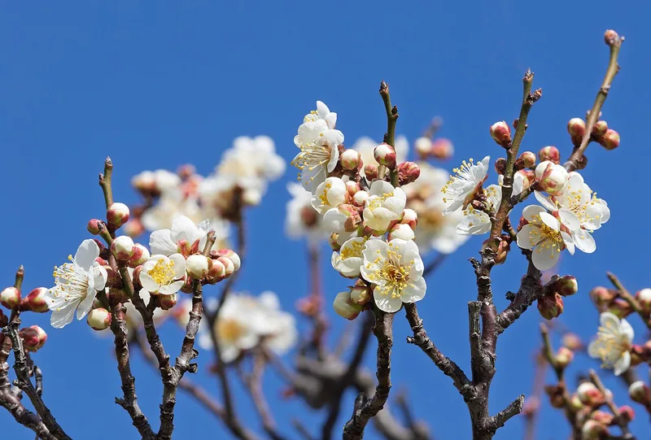
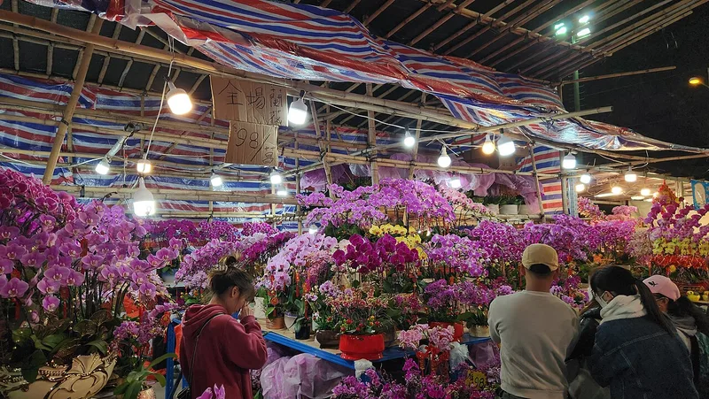

Festival Guide
Chinese New Year Decorations and Their Meanings
In the days before Chinese New Year, homes, shops and streets turn red and gold. Each decoration carries a wish, often hidden in a play on words. Here is what the most common ones mean, from red lanterns and spring couplets to the upside-down fu sign, door gods and kumquat trees, and when they traditionally go up and come down. Lunar New Year 2027 falls on Saturday 6 February.

Why everything is red
Red is the colour of Chinese New Year. It symbolises joy, virtue, truth and sincerity, Wikipedia explains, and in Mandarin its name sounds like the word for “prosperous”, so red is lucky in both look and sound. Traditional beliefs also held that red could scare away evil spirits.
An old story explains the custom. In the legend of the Nian, a beast that attacked villages, the villagers learned that it was afraid of the colour red and of loud noises, and they hung red lanterns and spring scrolls on their windows and doors.
Gold often appears beside the red. Spring couplets are written in black or gold characters on red paper, and gifts are wrapped in red or golden paper for good luck. Some families even give their doors and window frames a new coat of red paint before the festival.
Red lanterns
Round red lanterns are the easiest decoration to spot. They are typically red and oval, and they hang outside front doors and along streets. Hanging a red lantern in front of the door is believed to drive off bad luck, China Highlights says, and China Daily describes families hanging lanterns “to usher in blessings and good luck for the coming year”.
Lanterns belong to the whole festival, from New Year's Day to the Lantern Festival on the 15th day, which often marks the end of the celebrations.
Spring couplets (chunlian)
Spring couplets are pairs of poetic lines written on red paper. The two vertical lines are pasted on either side of the front door, and a short horizontal scroll of four characters goes above the door frame, TravelChinaGuide explains. Their words wish for spring, harmony or prosperity, and they come in pairs because even numbers are associated with good luck.
The custom is old. Couplets grew out of taofu, peach-wood boards hung on doors that carried the names of Shentu and Yulei, two legendary guards who punished harmful ghosts. Paper replaced wood in the Song dynasty, when couplets on doors became widespread, and the Ming emperor Zhu Yuanzhang later ordered every household to put them up at New Year.
Colour can carry a message too: according to TravelChinaGuide, couplets in yellow, green or purple suggest that a family member of the household has died within the past three years.

The fu sign, and why it hangs upside down
One of the most common decorations is a single character, fu, which stands for blessings and good fortune. It is usually written on a red, diamond-shaped square of paper.
Many families hang it upside down on purpose. The Chinese word for “upside down”, dao, sounds the same as, or almost the same as, the word for “arrive”, so an upside-down fu says that good fortune has arrived. China Highlights gives a second reading: dao can also mean “to pour out”, so the sign invites blessings to pour out onto the household.
Not everyone agrees. For Cantonese speakers, dao sounds like the Cantonese word for “pour”, which can suggest pouring luck away, so the fu character is not usually hung upside down in Cantonese communities, Wikipedia notes. It is a good example of how customs differ from region to region.

Paper cuttings, New Year pictures and door gods
Red paper cuttings are pasted on windows and doors before the festival. Craftspeople fold, draw and cut the paper, a skill handed down for more than 1,500 years, and Chinese paper-cutting was added to UNESCO's Representative List of the Intangible Cultural Heritage of Humanity in 2009, China Daily reports.
The pictures in the paper carry wishes. China Highlights lists the peach for long life, the pomegranate for fertility, the mandarin duck for love, the pine for eternal youth and the peony for honour and wealth. Paper cuttings are most common in northern and central China, the same guide says, while New Year pictures of lucky legendary figures and plants are pasted on doors and walls as a New Year greeting.
Door gods (menshen) are guardian figures, usually printed pictures pasted on the two halves of a double door. Martial door gods are meant to ward off evil spirits, and civil ones to attract blessings and good fortune. The pair should face each other, since placing them back to back is considered bad luck, and they are usually replaced every New Year, according to Wikipedia. The oldest pair are the guards Shentu and Yulei (also read Shenshu and Yulü); since the Tang dynasty, the most popular pair has been Qin Shubao and Yuchi Gong.
Flowers and fruit trees
Living plants bring the coming spring indoors. Blooming flowers symbolise the coming of spring and wishes for a prosperous new year, China Highlights says, and as the New Year approaches, markets and fairs selling flowers and other festive goods are set up.
Plum blossom symbolises luck, according to Wikipedia's list of New Year flowers, and is among the most popular blooming plants of the season. Kumquat trees are another favourite. In Mandarin the kumquat tree is called jinju shu: jin means gold, and ju sounds like the word for good luck, so the tree carries a wish for both wealth and good luck.
In Hong Kong, tangerine trees are popular for a similar reason: their name sounds like the Cantonese words for “gold” and “luck”, the South China Morning Post explains, and together with orchids they are the most popular plants for decorating and gifting at New Year. Not every flower is welcome: Wikipedia notes that, by tradition, chrysanthemums are not displayed at home during the New Year, because they are normally used to honour ancestors.


When decorations go up and come down
Most families decorate on New Year's Eve, though some begin around ten days before, China Highlights says, and spring couplets are usually pasted before New Year's Eve, according to TravelChinaGuide. Altars are prepared earlier: in Buddhist and Taoist homes, last year's altar decorations are taken down and burned about a week before the new year, on the “Little New Year”, and replaced, Wikipedia explains.
Taking decorations down is more relaxed. In cities, worn couplets are usually removed after the Lantern Festival, while in the countryside the old couplets often stay up until new ones replace them the next year, TravelChinaGuide says. Door gods, too, are usually replaced every New Year.
Decorating for 6 February 2027
Lunar New Year 2027, the start of the Year of the Fire Goat, falls on Saturday 6 February 2027, so New Year's Eve is Friday 5 February. If you follow the customs above, the season looks like this:
- Late January: the house is cleaned thoroughly before the new year. Families who decorate early start around ten days before, from about 27 January.
- About a week before: altar decorations are changed around Saturday 30 January.
- By Friday 5 February: couplets, fu signs, paper cuttings, lanterns and plants are in place on New Year's Eve.
- Saturday 6 February: New Year's Day. Leave the broom alone, as our guide to Chinese New Year taboos explains.
- Saturday 20 February: the Lantern Festival, the 15th day. In cities, worn couplets usually come down after it.
Customs differ between families and regions, as the fu sign shows, so treat this as a guide, not a rule. In Cambodia, too, families of Chinese descent decorate their homes with red paper-cuts, flowers, red lanterns and couplets, as our Lunar New Year guide describes.
Frequently asked questions
Why is the fu character hung upside down?
The word for upside down, dao, sounds like the word for “arrive”, so an upside-down fu suggests that good fortune has arrived. In Cantonese communities it is usually hung the right way up, because there dao sounds like “pour”, as in pouring luck away.
What do red lanterns mean at Chinese New Year?
Red is the festival's lucky colour, and hanging a red lantern by the door is believed to drive off bad luck and welcome blessings for the coming year.
What are spring couplets?
Pairs of poetic lines written in black or gold characters on red paper, pasted on both sides of the front door, with a short horizontal scroll above. Their words wish for spring, harmony or prosperity.
When do Chinese New Year decorations go up in 2027?
Most families decorate on New Year's Eve, Friday 5 February 2027, though some start around ten days earlier. The house is traditionally cleaned before the new year.
When do you take Chinese New Year decorations down?
In cities, worn couplets usually come down after the Lantern Festival, the 15th day, which is Saturday 20 February 2027. In the countryside, couplets often stay up until they are replaced the next year.
Why are kumquat trees a New Year decoration?
In Mandarin the tree's name combines the word for gold with a word that sounds like “good luck”, so it stands for a wish for wealth and good luck.
Sources and further reading
- Wikipedia: “Chinese New Year” — cleaning before the new year, the meaning of red and its sound-alike, red and evil spirits, the Nian legend, red paint and red or golden gift paper, red oval lanterns, the upside-down fu and the Cantonese exception, plum blossom, chrysanthemums, New Year markets, altar decorations at the Little New Year and the Lantern Festival ending the festivities.
- TravelChinaGuide: “Spring Festival Couplets (Chunlian)” (updated 14 July 2026) — how couplets are written and posted, when they go up and come down, taofu and Shentu and Yulei, the Song and Ming dynasties, and couplets in mourning colours.
- Wikipedia: “Menshen” — door gods: where they are pasted, martial and civil door gods, facing each other, yearly replacement, and the pairs Shenshu and Yulü and Qin Shubao and Yuchi Gong.
- China Highlights: “7 Chinese New Year Decorations That Bring Good Luck to Your Home” — red lanterns driving off bad luck, couplets in pairs, dao as “pour out”, paper-cut motifs and where they are common, New Year pictures, flowers and plum blossom, the kumquat tree's name, and when families decorate.
- China Daily: “Cutting remarks: The hidden meanings of festive decorations” (Chen Meiling, 1 February 2019) — paper cuttings on windows and doors, the 1,500-year-old craft, its 2009 UNESCO listing, and lanterns hung to usher in blessings.
- South China Morning Post: “How orchids and tangerine trees are an enduring tradition of Lunar New Year” — tangerine trees and the Cantonese words for gold and luck, and orchids and tangerine trees as Hong Kong's most popular New Year plants.
Customs and the meanings given to decorations vary between families and regions; dates follow the Lunar New Year table used by our zodiac checker, and the photos come from Wikimedia Commons under the free licences named under each picture.
Explore more: Lunar New Year guide · Chinese New Year taboos · Chinese New Year 2027 · Goat, Sheep or Ram?
← Back to the MyBirthSign Blogមគ្គុទ្ទេសក៍ពិធីបុណ្យ
គ្រឿងតុបតែងចូលឆ្នាំចិន និងអត្ថន័យរបស់វា
ប៉ុន្មានថ្ងៃមុនបុណ្យចូលឆ្នាំចិន ផ្ទះ ហាង និងដងផ្លូវ ប្រែជាពណ៌ក្រហម និងមាស។ គ្រឿងតុបតែងនីមួយៗ មានពាក្យជូនពរមួយ ដែលច្រើនតែលាក់ក្នុងការលេងពាក្យ។ ខាងក្រោមនេះជាអត្ថន័យនៃគ្រឿងតុបតែងដែលគេឃើញញឹកញាប់ជាងគេ ចាប់ពីគោមក្រហម និងឃ្លាពរជ័យជាគូ រហូតដល់សញ្ញា fu ដាក់បញ្ច្រាស ទេវតាឆ្មាំទ្វារ និងដើម kumquat ព្រមទាំងពេលដែលតាមប្រពៃណី គេដាក់ និងដោះវាចេញ។ ចូលឆ្នាំចិនឆ្នាំ 2027 ធ្លាក់នៅថ្ងៃសៅរ៍ 06/02/2027។
ហេតុអ្វីបានជាអ្វីៗសុទ្ធតែពណ៌ក្រហម
ពណ៌ក្រហម គឺជាពណ៌នៃបុណ្យចូលឆ្នាំចិន។ Wikipedia ពន្យល់ថា ពណ៌ក្រហមតំណាងឲ្យសេចក្ដីរីករាយ គុណធម៌ សេចក្ដីពិត និងភាពស្មោះត្រង់ ហើយក្នុងភាសាចិនកុកងឺ ឈ្មោះរបស់វាបញ្ចេញសំឡេងដូចពាក្យ «រុងរឿង» ដូច្នេះពណ៌ក្រហមនាំសំណាង ទាំងរូបរាង និងសំឡេង។ តាមជំនឿប្រពៃណី ពណ៌ក្រហមក៏អាចបណ្ដេញវិញ្ញាណអាក្រក់ផងដែរ។
រឿងព្រេងចាស់មួយ ពន្យល់ពីទំនៀមនេះ។ តាមរឿងព្រេងសត្វនៀន (Nian) ដែលជាសត្វសាហាវវាយប្រហារភូមិនានា អ្នកភូមិបានដឹងថា វាខ្លាចពណ៌ក្រហម និងសំឡេងខ្លាំងៗ ហើយពួកគេបានព្យួរគោមក្រហម និងក្រដាសឃ្លាពរជ័យ នៅលើបង្អួច និងទ្វាររបស់ពួកគេ។
ពណ៌មាស ច្រើនតែលេចឡើងក្បែរពណ៌ក្រហម។ ឃ្លាពរជ័យជាគូ ត្រូវបានសរសេរជាអក្សរពណ៌ខ្មៅ ឬមាស លើក្រដាសក្រហម ហើយកាដូត្រូវបានខ្ចប់ដោយក្រដាសពណ៌ក្រហម ឬមាស ដើម្បីសំណាងល្អ។ គ្រួសារខ្លះថែមទាំងលាបថ្នាំពណ៌ក្រហមថ្មី លើទ្វារ និងស៊ុមបង្អួចរបស់ពួកគេ មុនបុណ្យទៀតផង។
គោមក្រហម
គោមក្រហមរាងមូល ជាគ្រឿងតុបតែងដែលងាយមើលឃើញជាងគេ។ តាមធម្មតា វាមានពណ៌ក្រហម និងរាងពងក្រពើ ហើយគេព្យួរវានៅខាងក្រៅទ្វារមុខ និងតាមដងផ្លូវ។ China Highlights និយាយថា គេជឿថាការព្យួរគោមក្រហមនៅមុខទ្វារ អាចបណ្ដេញសំណាងអាក្រក់ ហើយ China Daily ពិពណ៌នាថា គ្រួសារនានាព្យួរគោម «ដើម្បីស្វាគមន៍ពរជ័យ និងសំណាងល្អសម្រាប់ឆ្នាំខាងមុខ»។
គោមជារបស់បុណ្យទាំងមូល ចាប់ពីថ្ងៃចូលឆ្នាំ រហូតដល់បុណ្យគោម នៅថ្ងៃទី 15 ដែលជារឿយៗជាថ្ងៃបញ្ចប់ការប្រារព្ធបុណ្យ។
ឃ្លាពរជ័យជាគូ (chunlian)
ឃ្លាពរជ័យជាគូ គឺជាឃ្លាកំណាព្យមួយគូ ដែលសរសេរលើក្រដាសក្រហម។ TravelChinaGuide ពន្យល់ថា ឃ្លាបញ្ឈរទាំងពីរ ត្រូវបានបិទនៅសងខាងទ្វារមុខ ហើយក្រដាសផ្ដេកខ្លីមួយ មានអក្សរបួនតួ ត្រូវបានបិទពីលើស៊ុមទ្វារ។ ពាក្យរបស់វាជូនពរឲ្យមាននិទាឃរដូវ សុខដុមរមនា ឬភាពរុងរឿង ហើយវាមកជាគូ ព្រោះលេខគូត្រូវបានភ្ជាប់នឹងសំណាងល្អ។
ទំនៀមនេះមានតាំងពីយូរយារណាស់មកហើយ។ ឃ្លាពរជ័យកើតចេញពី taofu ដែលជាបន្ទះឈើប៉ែស ព្យួរលើទ្វារ ដោយមានឈ្មោះ Shentu និង Yulei ដែលជាឆ្មាំពីរនាក់ក្នុងរឿងព្រេង ដែលដាក់ទោសខ្មោចអាក្រក់។ ក្រដាសបានជំនួសឈើនៅសម័យរាជវង្សសុង (Song) នៅពេលដែលការបិទឃ្លាពរជ័យលើទ្វារ បានរីករាលដាល ហើយក្រោយមក អធិរាជ Zhu Yuanzhang នៃរាជវង្សមីង (Ming) បានបញ្ជាឲ្យគ្រប់គ្រួសារបិទវាពេលចូលឆ្នាំ។
ពណ៌ក៏អាចបង្ហាញសារផងដែរ៖ យោងតាម TravelChinaGuide ឃ្លាពរជ័យពណ៌លឿង បៃតង ឬស្វាយ បង្ហាញថា ក្នុងគ្រួសារនោះ មានសមាជិកម្នាក់បានទទួលមរណភាព ក្នុងរយៈពេលបីឆ្នាំចុងក្រោយនេះ។
សញ្ញា fu និងហេតុអ្វីបានជាគេព្យួរវាបញ្ច្រាស
គ្រឿងតុបតែងដែលគេឃើញញឹកញាប់ជាងគេមួយ គឺអក្សរតែមួយតួ គឺ fu ដែលតំណាងឲ្យពរជ័យ និងសំណាងល្អ។ ជាធម្មតា គេសរសេរវាលើក្រដាសក្រហមរាងការ៉េ ដាក់ផ្អៀងជារាងពេជ្រ។
គ្រួសារជាច្រើនព្យួរវាបញ្ច្រាសដោយចេតនា។ ពាក្យចិនសម្រាប់ «បញ្ច្រាស» គឺ dao បញ្ចេញសំឡេងដូច ឬស្ទើរតែដូចពាក្យ «មកដល់» ដូច្នេះ fu ដែលដាក់បញ្ច្រាស មានន័យថា សំណាងល្អបានមកដល់ហើយ។ China Highlights ផ្ដល់ការបកស្រាយមួយទៀត៖ dao ក៏អាចមានន័យថា «ចាក់ចេញ» ដែរ ដូច្នេះសញ្ញានេះអញ្ជើញពរជ័យឲ្យហូរចាក់មកលើគ្រួសារ។
មិនមែនគ្រប់គ្នាយល់ស្របនោះទេ។ សម្រាប់អ្នកនិយាយភាសាកាតាំង ពាក្យ dao បញ្ចេញសំឡេងដូចពាក្យកាតាំងសម្រាប់ «ចាក់» ដែលអាចមានន័យថា ចាក់សំណាងចោល ដូច្នេះ Wikipedia កត់សម្គាល់ថា ក្នុងសហគមន៍និយាយភាសាកាតាំង គេមិនសូវព្យួរអក្សរ fu បញ្ច្រាសទេ។ នេះជាឧទាហរណ៍ល្អមួយ អំពីទំនៀមទម្លាប់ដែលខុសគ្នាពីតំបន់មួយទៅតំបន់មួយ។
ក្រដាសកាត់ គំនូរចូលឆ្នាំ និងទេវតាឆ្មាំទ្វារ
ក្រដាសក្រហមកាត់ជាលំនាំ ត្រូវបានបិទលើបង្អួច និងទ្វារមុនបុណ្យ។ សិប្បករបត់ គូរ និងកាត់ក្រដាស ដែលជាជំនាញបន្តពីដូនតាជាង 1,500 ឆ្នាំមកហើយ ហើយ China Daily រាយការណ៍ថា សិល្បៈកាត់ក្រដាសចិន ត្រូវបានបញ្ចូលក្នុងបញ្ជីតំណាងនៃបេតិកភណ្ឌវប្បធម៌អរូបីនៃមនុស្សជាតិ របស់អង្គការយូណេស្កូ ក្នុងឆ្នាំ 2009។
រូបភាពក្នុងក្រដាសកាត់ មានពាក្យជូនពររៀងៗខ្លួន។ China Highlights រាយថា ផ្លែប៉ែស តំណាងឲ្យអាយុវែង ផ្លែទទឹម តំណាងឲ្យការមានកូនចៅ ទាម៉ាន់ដារីន តំណាងឲ្យសេចក្ដីស្រឡាញ់ ដើមស្រល់ តំណាងឲ្យភាពក្មេងជាដរាប និងផ្កា peony តំណាងឲ្យកិត្តិយស និងទ្រព្យសម្បត្តិ។ មគ្គុទ្ទេសក៍ដដែលនិយាយថា ក្រដាសកាត់មានច្រើនជាងគេនៅភាគខាងជើង និងភាគកណ្ដាលនៃប្រទេសចិន ចំណែកគំនូរចូលឆ្នាំ ដែលមានរូបតួអង្គក្នុងរឿងព្រេង និងរុក្ខជាតិនាំសំណាង ត្រូវបានបិទលើទ្វារ និងជញ្ជាំង ជាការជូនពរឆ្នាំថ្មី។
ទេវតាឆ្មាំទ្វារ (menshen) គឺជារូបអ្នកការពារ ដែលជាធម្មតាជារូបភាពបោះពុម្ព បិទលើទ្វារទាំងពីរផ្ទាំងនៃទ្វារគូ។ ទេវតាឆ្មាំទ្វារខាងយោធា មានតួនាទីបណ្ដេញវិញ្ញាណអាក្រក់ ហើយទេវតាខាងស៊ីវិល មានតួនាទីទាក់ទាញពរជ័យ និងសំណាងល្អ។ យោងតាម Wikipedia រូបទាំងពីរគួរបែរមុខដាក់គ្នា ព្រោះការដាក់វាបែរខ្នងដាក់គ្នា ត្រូវបានចាត់ទុកថាជាសំណាងអាក្រក់ ហើយជាធម្មតា គេប្ដូររូបទាំងនេះរៀងរាល់ចូលឆ្នាំ។ គូដែលចាស់ជាងគេ គឺឆ្មាំ Shentu និង Yulei (ដែលគេក៏អានថា Shenshu និង Yulü ដែរ) ហើយចាប់តាំងពីរាជវង្សថាង (Tang) មក គូដែលពេញនិយមជាងគេ គឺ Qin Shubao និង Yuchi Gong។
ផ្កា និងដើមឈើហូបផ្លែ
រុក្ខជាតិរស់ នាំនិទាឃរដូវដែលកំពុងមកដល់ ចូលក្នុងផ្ទះ។ China Highlights និយាយថា ផ្ការីក តំណាងឲ្យការមកដល់នៃនិទាឃរដូវ និងការជូនពរឲ្យឆ្នាំថ្មីរុងរឿង ហើយនៅពេលចូលឆ្នាំកាន់តែខិតជិតមកដល់ ផ្សារ និងពិព័រណ៍លក់ផ្កា និងទំនិញបុណ្យផ្សេងៗ ត្រូវបានបើកឡើង។
ផ្កាព្រូន (plum blossom) តំណាងឲ្យសំណាង យោងតាមបញ្ជីផ្កាចូលឆ្នាំរបស់ Wikipedia ហើយជាផ្កាដែលពេញនិយមជាងគេមួយក្នុងរដូវនេះ។ ដើម kumquat (ក្រូចផ្លែតូចៗ) ក៏ជាដើមដែលគេចូលចិត្តដែរ។ ក្នុងភាសាចិនកុកងឺ ដើម kumquat ហៅថា jinju shu៖ jin មានន័យថា មាស ហើយ ju បញ្ចេញសំឡេងដូចពាក្យ «សំណាងល្អ» ដូច្នេះដើមនេះតំណាងឲ្យការជូនពរ ទាំងទ្រព្យសម្បត្តិ និងសំណាងល្អ។
នៅហុងកុង ដើមក្រូចខ្វិច (tangerine) ពេញនិយមដោយហេតុផលស្រដៀងគ្នា៖ កាសែត South China Morning Post ពន្យល់ថា ឈ្មោះរបស់វាបញ្ចេញសំឡេងដូចពាក្យកាតាំងសម្រាប់ «មាស» និង «សំណាង» ហើយរួមជាមួយផ្កាអ័រគីដេ វាជារុក្ខជាតិដែលពេញនិយមជាងគេ សម្រាប់តុបតែង និងជូនជាកាដូពេលចូលឆ្នាំ។ មិនមែនគ្រប់ផ្កាសុទ្ធតែល្អនោះទេ៖ Wikipedia កត់សម្គាល់ថា តាមប្រពៃណី គេមិនដាក់ផ្កា chrysanthemum តាំងក្នុងផ្ទះពេលចូលឆ្នាំទេ ព្រោះជាធម្មតា ផ្កានេះប្រើសម្រាប់គោរពបូជាដូនតា។
ពេលដាក់ និងពេលដោះគ្រឿងតុបតែង
China Highlights និយាយថា គ្រួសារភាគច្រើនតុបតែងផ្ទះនៅយប់ចូលឆ្នាំ ទោះបីមានអ្នកខ្លះចាប់ផ្ដើមប្រហែលដប់ថ្ងៃមុនក៏ដោយ ហើយយោងតាម TravelChinaGuide ជាធម្មតា ឃ្លាពរជ័យត្រូវបានបិទមុនយប់ចូលឆ្នាំ។ អាសនៈត្រូវបានរៀបចំមុននេះ៖ Wikipedia ពន្យល់ថា ក្នុងផ្ទះអ្នកកាន់ព្រះពុទ្ធសាសនា និងលទ្ធិតាវ គ្រឿងលម្អអាសនៈពីឆ្នាំមុន ត្រូវបានដោះចេញ និងដុតចោល ប្រហែលមួយសប្ដាហ៍មុនឆ្នាំថ្មី នៅថ្ងៃ «ចូលឆ្នាំតូច» (Little New Year) ហើយប្ដូរថ្មី។
ការដោះគ្រឿងតុបតែងចេញ មិនសូវតឹងរ៉ឹងទេ។ TravelChinaGuide និយាយថា នៅទីក្រុង ឃ្លាពរជ័យដែលចាស់ទ្រុឌទ្រោម ជាធម្មតាត្រូវបានដោះចេញក្រោយបុណ្យគោម ចំណែកនៅជនបទ ឃ្លាពរជ័យចាស់ច្រើនតែនៅដដែល រហូតដល់មានឃ្លាថ្មីមកជំនួសនៅឆ្នាំក្រោយ។ ទេវតាឆ្មាំទ្វារក៏ដូចគ្នាដែរ ជាធម្មតាត្រូវបានប្ដូររៀងរាល់ចូលឆ្នាំ។
ការតុបតែងសម្រាប់ថ្ងៃ 06/02/2027
ចូលឆ្នាំចិនឆ្នាំ 2027 ដែលជាការចាប់ផ្ដើមឆ្នាំមមែ ធាតុភ្លើង ធ្លាក់នៅថ្ងៃសៅរ៍ 06/02/2027 ដូច្នេះយប់ចូលឆ្នាំគឺថ្ងៃសុក្រ 05/02/2027។ បើអ្នកធ្វើតាមទំនៀមខាងលើ រដូវបុណ្យនឹងមានលំដាប់ដូចនេះ៖
- ចុងខែមករា៖ គេសម្អាតផ្ទះយ៉ាងហ្មត់ចត់មុនឆ្នាំថ្មី។ គ្រួសារដែលតុបតែងមុន ចាប់ផ្ដើមប្រហែលដប់ថ្ងៃមុន គឺចាប់ពីប្រហែលថ្ងៃ 27/01/2027។
- ប្រហែលមួយសប្ដាហ៍មុន៖ គ្រឿងលម្អអាសនៈត្រូវបានប្ដូរ នៅប្រហែលថ្ងៃសៅរ៍ 30/01/2027។
- ត្រឹមថ្ងៃសុក្រ 05/02/2027៖ ឃ្លាពរជ័យ សញ្ញា fu ក្រដាសកាត់ គោម និងរុក្ខជាតិ ត្រូវបានដាក់រួចរាល់ នៅយប់ចូលឆ្នាំ។
- ថ្ងៃសៅរ៍ 06/02/2027៖ ថ្ងៃចូលឆ្នាំ។ សូមកុំបោសផ្ទះ ដូចដែលមគ្គុទ្ទេសក៍ការហាមប្រាមពេលចូលឆ្នាំចិនរបស់យើងពន្យល់។
- ថ្ងៃសៅរ៍ 20/02/2027៖ បុណ្យគោម ថ្ងៃទី 15។ នៅទីក្រុង ជាធម្មតា គេដោះឃ្លាពរជ័យចាស់ៗចេញ បន្ទាប់ពីថ្ងៃនេះ។
ទំនៀមទម្លាប់ខុសគ្នាតាមគ្រួសារ និងតំបន់ ដូចដែលសញ្ញា fu បង្ហាញ ដូច្នេះសូមចាត់ទុកលំដាប់នេះជាការណែនាំ មិនមែនជាច្បាប់ទេ។ នៅកម្ពុជាផងដែរ គ្រួសារដែលមានដើមកំណើតចិន តុបតែងផ្ទះដោយក្រដាសក្រហមកាត់ជាលំនាំ ផ្កា គោមក្រហម និងឃ្លាពរជ័យជាគូ ដូចដែលមគ្គុទ្ទេសក៍ចូលឆ្នាំចិនរបស់យើងពិពណ៌នា។
សំណួរដែលគេសួរញឹកញាប់
ហេតុអ្វីបានជាគេព្យួរអក្សរ fu បញ្ច្រាស?
ពាក្យសម្រាប់ «បញ្ច្រាស» គឺ dao បញ្ចេញសំឡេងដូចពាក្យ «មកដល់» ដូច្នេះ fu ដែលដាក់បញ្ច្រាស បង្ហាញថាសំណាងល្អបានមកដល់ហើយ។ ក្នុងសហគមន៍និយាយភាសាកាតាំង ជាធម្មតាគេព្យួរវាតាមទិសធម្មតា ព្រោះក្នុងភាសានោះ dao បញ្ចេញសំឡេងដូច «ចាក់» ដូចជាការចាក់សំណាងចោល។
តើគោមក្រហមមានអត្ថន័យអ្វីពេលចូលឆ្នាំចិន?
ពណ៌ក្រហមជាពណ៌សំណាងរបស់បុណ្យនេះ ហើយគេជឿថាការព្យួរគោមក្រហមនៅមុខទ្វារ អាចបណ្ដេញសំណាងអាក្រក់ និងស្វាគមន៍ពរជ័យសម្រាប់ឆ្នាំខាងមុខ។
តើឃ្លាពរជ័យជាគូ (chunlian) ជាអ្វី?
ជាឃ្លាកំណាព្យមួយគូ សរសេរជាអក្សរពណ៌ខ្មៅ ឬមាស លើក្រដាសក្រហម បិទនៅសងខាងទ្វារមុខ ដោយមានក្រដាសផ្ដេកខ្លីមួយនៅពីលើ។ ពាក្យរបស់វាជូនពរឲ្យមាននិទាឃរដូវ សុខដុមរមនា ឬភាពរុងរឿង។
តើគេដាក់គ្រឿងតុបតែងចូលឆ្នាំចិនពេលណា ក្នុងឆ្នាំ 2027?
គ្រួសារភាគច្រើនតុបតែងនៅយប់ចូលឆ្នាំ គឺថ្ងៃសុក្រ 05/02/2027 ទោះបីអ្នកខ្លះចាប់ផ្ដើមប្រហែលដប់ថ្ងៃមុនក៏ដោយ។ តាមប្រពៃណី គេសម្អាតផ្ទះមុនឆ្នាំថ្មី។
តើគេដោះគ្រឿងតុបតែងចូលឆ្នាំចិនចេញពេលណា?
នៅទីក្រុង ជាធម្មតាគេដោះឃ្លាពរជ័យចាស់ៗចេញ ក្រោយបុណ្យគោម នៅថ្ងៃទី 15 គឺថ្ងៃសៅរ៍ 20/02/2027។ នៅជនបទ ឃ្លាពរជ័យច្រើនតែនៅដដែល រហូតដល់មានឃ្លាថ្មីមកជំនួសនៅឆ្នាំក្រោយ។
ហេតុអ្វីបានជាដើម kumquat ជាគ្រឿងតុបតែងចូលឆ្នាំ?
ក្នុងភាសាចិនកុកងឺ ឈ្មោះរបស់ដើមនេះ ផ្សំពាក្យ «មាស» ជាមួយពាក្យដែលបញ្ចេញសំឡេងដូច «សំណាងល្អ» ដូច្នេះវាតំណាងឲ្យការជូនពរ ទាំងទ្រព្យសម្បត្តិ និងសំណាងល្អ។
ប្រភព និងឯកសារអានបន្ថែម
- Wikipedia: “Chinese New Year” — ការសម្អាតផ្ទះមុនឆ្នាំថ្មី អត្ថន័យនៃពណ៌ក្រហម និងពាក្យស្រដៀងសំឡេងរបស់វា ពណ៌ក្រហម និងវិញ្ញាណអាក្រក់ រឿងព្រេងសត្វនៀន ការលាបថ្នាំពណ៌ក្រហម និងក្រដាសខ្ចប់កាដូពណ៌ក្រហម ឬមាស គោមក្រហមរាងពងក្រពើ សញ្ញា fu ដាក់បញ្ច្រាស និងករណីលើកលែងរបស់អ្នកនិយាយភាសាកាតាំង ផ្កាព្រូន ផ្កា chrysanthemum ផ្សារចូលឆ្នាំ គ្រឿងលម្អអាសនៈនៅថ្ងៃចូលឆ្នាំតូច និងបុណ្យគោមដែលបញ្ចប់ការប្រារព្ធបុណ្យ។
- TravelChinaGuide: “Spring Festival Couplets (Chunlian)” (updated 14 July 2026) — របៀបសរសេរ និងបិទឃ្លាពរជ័យ ពេលដាក់ និងពេលដោះ taofu និង Shentu និង Yulei រាជវង្សសុង និងមីង និងឃ្លាពរជ័យពណ៌កាន់ទុក្ខ។
- Wikipedia: “Menshen” — ទេវតាឆ្មាំទ្វារ៖ កន្លែងបិទ ទេវតាខាងយោធា និងខាងស៊ីវិល ការបែរមុខដាក់គ្នា ការប្ដូររៀងរាល់ឆ្នាំ និងគូ Shenshu និង Yulü ព្រមទាំង Qin Shubao និង Yuchi Gong។
- China Highlights: “7 Chinese New Year Decorations That Bring Good Luck to Your Home” — គោមក្រហមបណ្ដេញសំណាងអាក្រក់ ឃ្លាពរជ័យជាគូ dao មានន័យថា «ចាក់ចេញ» លំនាំក្រដាសកាត់ និងតំបន់ដែលមានច្រើន គំនូរចូលឆ្នាំ ផ្កា និងផ្កាព្រូន ឈ្មោះដើម kumquat និងពេលដែលគ្រួសារនានាតុបតែងផ្ទះ។
- China Daily: “Cutting remarks: The hidden meanings of festive decorations” (Chen Meiling, 1 February 2019) — ក្រដាសកាត់បិទលើបង្អួច និងទ្វារ សិប្បកម្មដែលមានអាយុ 1,500 ឆ្នាំ ការបញ្ចូលក្នុងបញ្ជីរបស់យូណេស្កូ ឆ្នាំ 2009 និងគោមដែលព្យួរដើម្បីស្វាគមន៍ពរជ័យ។
- South China Morning Post: “How orchids and tangerine trees are an enduring tradition of Lunar New Year” — ដើមក្រូចខ្វិច និងពាក្យកាតាំងសម្រាប់ «មាស» និង «សំណាង» ព្រមទាំងផ្កាអ័រគីដេ និងដើមក្រូចខ្វិច ជារុក្ខជាតិចូលឆ្នាំដែលពេញនិយមជាងគេនៅហុងកុង។
ទំនៀមទម្លាប់ និងអត្ថន័យដែលគេផ្ដល់ឲ្យគ្រឿងតុបតែង ខុសគ្នាតាមគ្រួសារ និងតំបន់។ កាលបរិច្ឆេទផ្អែកលើតារាងចូលឆ្នាំចិន ដែលកម្មវិធីពិនិត្យរាសីរបស់យើងប្រើ ហើយរូបថតមកពី Wikimedia Commons ក្រោមអាជ្ញាប័ណ្ណសេរី ដែលបានបញ្ជាក់នៅក្រោមរូបភាពនីមួយៗ។
អានបន្ថែម៖ មគ្គុទ្ទេសក៍ចូលឆ្នាំចិន · ការហាមប្រាមពេលចូលឆ្នាំចិន · ចូលឆ្នាំចិន 2027 · ពពែ ចៀម ឬចៀមឈ្មោល?
← ត្រឡប់ទៅប្លុក MyBirthSign